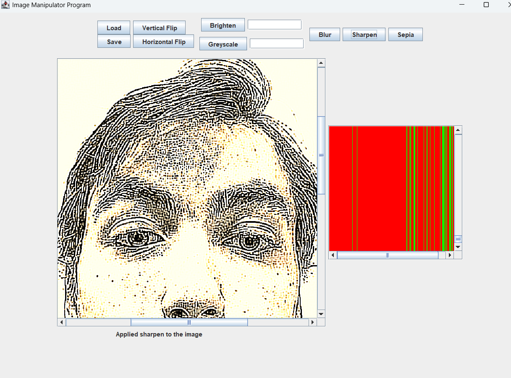
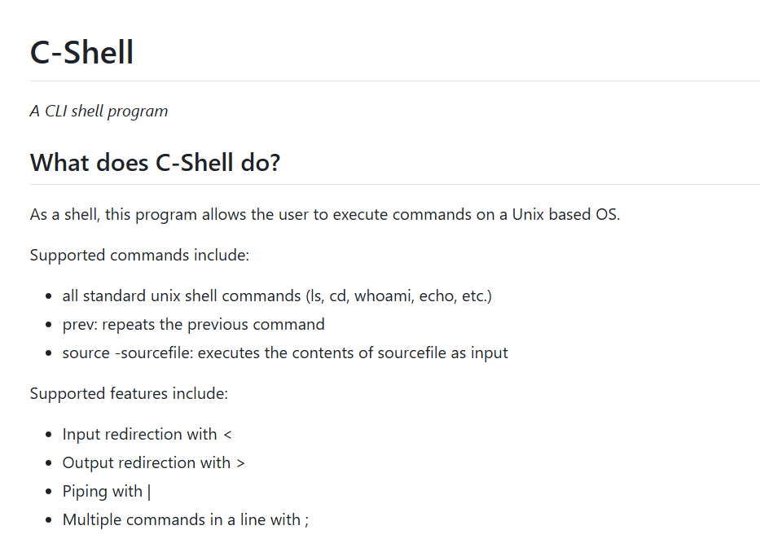
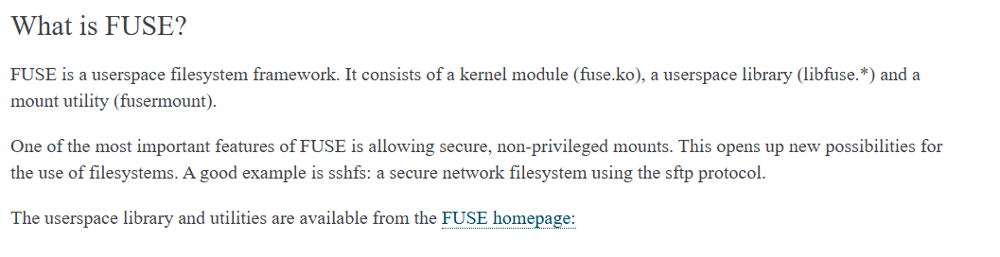
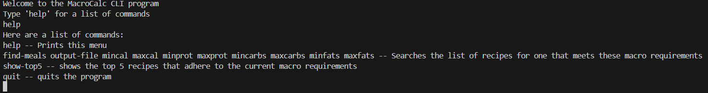

Other Projects
Imageine | github

Languages/Tools used: Java, Java Swing, JUnit, Git
A photoshop-like tool where users can load images and apply filters, rotations, and other transformations to the image and export them. Written using Java and Java Swing, tested using JUnit
C-Shell | github

Languages/Tools used: C, Makefile, Git
A program that mimicks the functionality of the linux shell written in C.
FUSE Filesystem | github

Languages/Tools used: C, Makefile, Git
Implementation of the FUSE interface in C.
Marble Solitaire | github
Languages/Tools used: Java, Java Swing, JUnit, Git
Created an implementation of the game Marble Solitaire. Allows for multiple types of boards and includes both a GUI and TUI version.
MacroMeal | github

Languages/Tools used: Java, Excel, JUnit, Git
Tool that helps users find well reviewed meals from popular recipe websites that fit their macronutrient requirements. Written with Java and currently only supports a TUI.